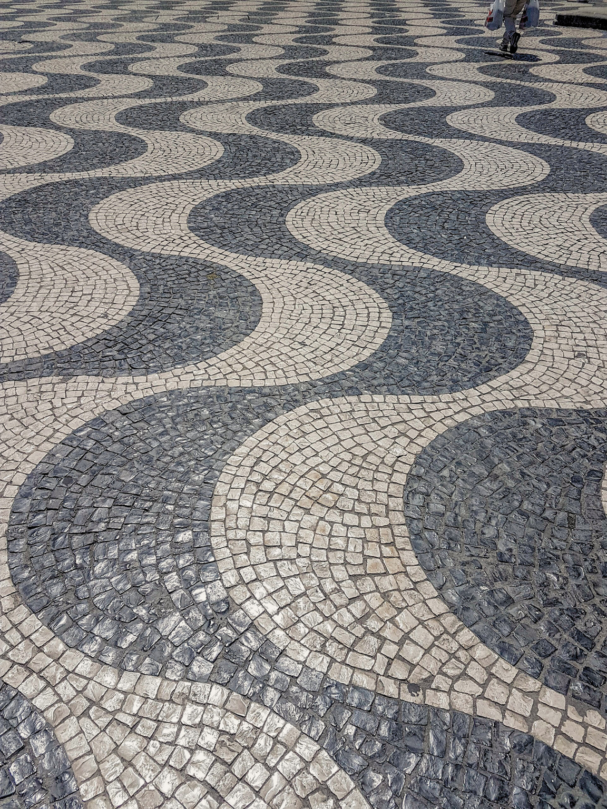
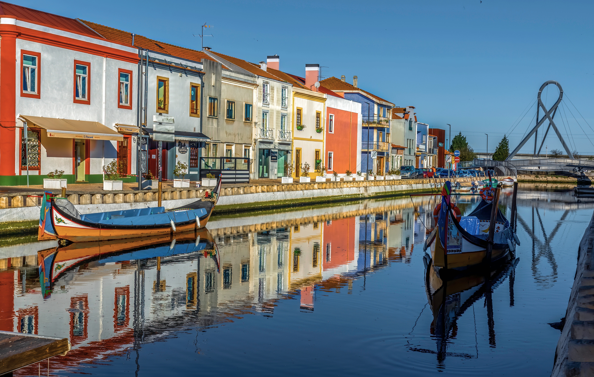
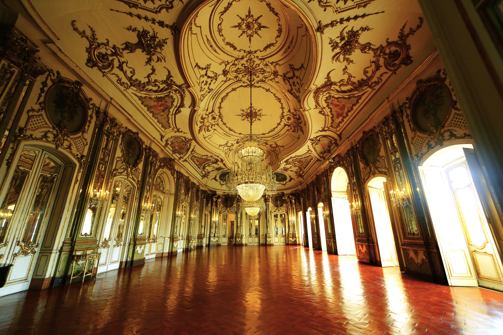

Private guidance
Context and stories, not simply transportation.

Private journeys through Portugal
Choose the Portugal already on your mind. BLU will reveal the experiences that belong there—and connect them with perspective, rhythm and care.
Explore Portugal ↗Explore Portugal
Start with a destination. From there, choose how you would like to experience it and discover a considered selection of private journeys.
The place brings you in. BLU gives it perspective.
Your selected place
Choose how you would like to move through the city. Each format offers a different rhythm, while BLU shapes the perspective.
How would you like to explore?
Choose what draws you. BLU will shape how the experiences belong together.
Tell us what you have in mind ↗Selected and interpreted by Adriana and Tiago
Adriana brings a travel journalist’s attention to story and detail. Tiago brings deep local knowledge, historical perspective and attentive hosting. Together, they choose what belongs—and leave the rest behind.
Meet the BLU House ↗Context and stories, not simply transportation.
Less waiting, unnecessary walking and fatigue.
Places and people selected for genuine quality.
From access and timing to the moments between.
Traveling through Portugal?
A transfer between regions can be more than movement. We shape meaningful stops, private guidance and a natural rhythm from one destination to the next.

Lisbon to Porto · Lisbon to the Algarve
One house · five perspectives
Journey colors create atmosphere and meaning. The institutional identity remains the thread that holds every experience together.
Culture, architecture and everyday life.
Landscape, terrain and ways of living.
Coastlines, rivers and maritime life.
Material, making, food and wine.
Architecture, memory and cultural depth.

Begin with what matters to you
Share your plans with us. Adriana will personally review them and return with a considered first direction.
Plan Your Journey ↗